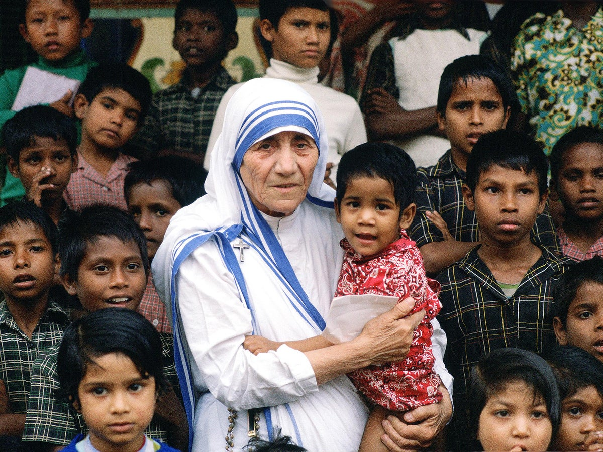

MOTHER TERESA

MOTHER TERESA WITH CHILDREN
She founded the order, The Missionaries of Charity, to look after abandoned babies and to help the poorest of the poor, once saying that they "lived like animals but die like angels". In 1979 she received the Nobel Peace Prize and after her death was canonised as Saint Teresa.
TIMELINE OF HER JOURNEY
- Mother Terese was born on 26th august 1910 in the Ottomon empire.
- She belonged to the religion of christanity.
- Mother Teresa was a nun in a catholic church.
- She wanted to live a religious life since her childhood.
- Mother Terese came to india in 1929.
- She adopted citizenship of india after living for years in the country.
- The pious lady was awarded Padma Shri in 1962.
- She died of a heart attack on september 5th ,1997
A Tribute to Mother Teresa by Lk 👍